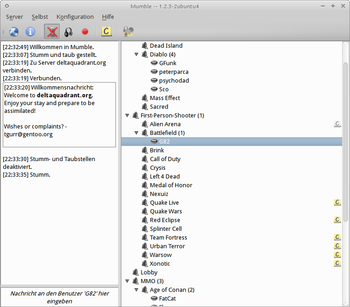

Mumble
Dieser Artikel wurde für die folgenden Ubuntu-Versionen getestet:
Ubuntu 14.04 Trusty Tahr
Zum Verständnis dieses Artikels sind folgende Seiten hilfreich:
Mumble ist eine freie Sprachkonferenzsoftware, die sich durch niedrige Latenzzeit und gute Sprachqualität (durch die Verwendung des Codecs Speex  werden Nebengeräusche ausgefiltert) z.B. für den Einsatz bei Computerspielen im Netzwerk bzw. über das Internet eignet. Mumble eignet sich im Gegensatz zur Internet-Telefonie am besten für geschlossene Benutzergruppen. Sämtlicher Datenverkehr erfolgt verschlüsselt. Mumble verwendet wie die Desktop-Umgebung KDE die Bibliothek Qt und ist plattformunabhängig: vorkompilierte Versionen sind für Windows, Linux und Mac OS X, sowie IOS verfügbar.
werden Nebengeräusche ausgefiltert) z.B. für den Einsatz bei Computerspielen im Netzwerk bzw. über das Internet eignet. Mumble eignet sich im Gegensatz zur Internet-Telefonie am besten für geschlossene Benutzergruppen. Sämtlicher Datenverkehr erfolgt verschlüsselt. Mumble verwendet wie die Desktop-Umgebung KDE die Bibliothek Qt und ist plattformunabhängig: vorkompilierte Versionen sind für Windows, Linux und Mac OS X, sowie IOS verfügbar.
Als zusätzliches Feature erlaubt Mumble etwa die Verwendung einer Text-zu-Sprache-Engine, die alle (oder nur bestimmte) Nachrichten vorliest. Eine Overlay-Funktion zeigt einem auf Wunsch in einer 3D-Anwendung an, wer gerade im gleichen Kanal (wie man selbst) ist und wer gerade spricht. Neben einfachem Text können auch Bilder angezeigt werden. Eine weitere Funktion ermöglicht es einem Benutzer, positionsabhängig in die Richtung zu hören, an der andere sich im Spiel befinden (Voraussetzung: Benutzer sind im gleichen Kanal und haben diese Funktion auch aktiviert). Skins erlauben eine Anpassung des Aussehens an eigene Wünsche.
Mit der Version 1.1.8 wurden Event-Sounds eingeführt sowie die Anzeige von Benachrichtigungen (Kurznachrichten, Notification-Area). Auch diese Funktionen sind Mumble-typisch frei konfigurierbar. Tastenkürzel sind nun beliebig wählbar, was zum Beispiel mehrere Tasten-Kombinationen für eine Funktion erlaubt. Die deutsche Übersetzung wurde stark überarbeitet.
Mumble benötigt zwingend SSE-Unterstützung durch den Prozessor. Dies ist aber in allen neueren CPUs ab Pentium 3 oder Athlon-XP vorhanden.
Es gibt auch einen zu Mumble gehörenden Server: Murmur .

Installation¶
Mumble befindet sich in den Softwarequellen und kann daher über folgendes Paket installiert werden [1].
mumble (universe)
 mit apturl
mit apturl
Paketliste zum Kopieren:
sudo apt-get install mumble
sudo aptitude install mumble
Die Anwendung lässt sich bei Ubuntu-Varianten mit einem Anwendungsmenü über den Eintrag "Internet -> Mumble" starten.
Nutzung¶
Erstkonfiguration¶
Beim ersten Start wird ein Konfigurationsassistent angeboten, um die nötigen Audioeinstellungen vorzunehmen. Diesem ist einfach zu folgen. Eventuell ist vorher noch ein korrektes Einstellen des Mikrofons über den Lautstärkeregler nötig. Den Assistenten findet man später auch unter "Konfiguration -> Audio Assistent" wieder.
Verbinden¶
Um sich mit einem Mumble Server zu verbinden, geht man über "Server -> Verbinden" in den "Server Browser" und kann hier einen beliebigen Server auswählen. Befindet sich der eigene Wunschkandidat nicht in der Liste, lässt sich dieser alternativ über den Reiter "Benutzerdefinierte Server" anlegen.
Text-to-Speech¶
Um die "text-to-speech"-Funktion, die Ausgaben in der linken Bildschirmhälfte vorliest, zu aktivieren, stellt man zunächst sicher, dass die erforderlichen Pakete vorhanden sind [1]:
espeak
speech-dispatcher (universe)
Jetzt muss der speech-dispatcher konfiguriert werden. Dazu kopiert man zunächst die Vorgabe-Konfiguration in sein Heimverzeichnis [3]:
mkdir $HOME/.speech-dispatcher cp -R /etc/speech-dispatcher $HOME/.speech-dispatcher/
Nun muss man den speech-dispatcher noch anweisen, die deutsche Sprachkonfiguration zu benutzen. In der Datei $HOME/.speech-dispatcher/speech-dispatcher/speechd.conf kommentiert man den Eintrag DefaultLanguage aus (entfernt die Raute davor) und setzt den Wert auf de. Nach einem Neustart von Mumble sollte das "Vorlesen" funktionieren.
Einstellungen¶
Über "Konfiguration -> Einstellungen" lassen sich diverse Optionen festlegen. In den "Grundeinstellungen" lässt sich unter "Übertragung" regeln, welcher Auslöser die eigene Sprachübertragung startet: "Stimmaktivierung" (nur Gesprochenes wird gesendet, keine Sprechpausen), "Kontinuierlich" (es wird ohne Unterbrechung gesendet, jeder Atemzug ist hörbar) oder "Push-To-Talk" (gesendet wird nur auf Tastendruck, dieser ist unter Shortcuts bzw. Tastenkürzel einzustellen).
Über Kompression kann die Sprachqualität bzw. der Bandbreitenverbrauch eingestellt werden. Für erfahrene Benutzer empfiehlt es sich, das "Benutzerinterface" auf "Expertenkonfiguration" einzustellen.
Pulseaudio unterstützt eine experimentelle Echo-Unterdrückung für Benutzer mit Boxen (statt Headset).
Problembehebung¶
UDP-/TCP-Port¶
Es kann vorkommen, dass der UDP-Port geblockt wird und Mumble-Benutzer sich nicht gegenseitig hören können. Als Workaround geht man unter "Konfiguration -> Einstellungen -> Benutzerinterface" und setzt ein Häkchen bei "Expertenkonfiguration". Dann wechselt man zu "Konfiguration -> Einstellungen -> Netzwerk" und setzt bei "Benutze TCP-Modus" ein Häkchen. Anschließend "Anwenden" nicht vergessen! Damit wird die Sprachübertragung über den langsameren TCP-Port abgewickelt.
Selbsttest¶
Ein Selbsttest kann vorgenommen werden, in dem man (im Expertenmodus) auf "Audioausgabe" geht und einen "Loopback-Test" bzw. "Rückkopplungs-Test" auf "Server" stellt und diese Einstellung mit "Anwenden" aktiviert. Jetzt sollte man sich selbst hören können. Anschließend wieder auf "Keine" stellen und aktivieren, damit man wieder normal reden kann.
Links¶
Mumble - Wikipedia
wiki.natenom.de
 - Umfassendes Handbuch rund um Mumble, dessen Server, Bot, Mobilgeräten und mehr
- Umfassendes Handbuch rund um Mumble, dessen Server, Bot, Mobilgeräten und mehrMumble HowTo
- mit Verweisen auf weitere AnleitungenPPA
- aktuellste Entwicklerversion installieren
- Erstellt mit Inyoka
-
 2004 – 2017 ubuntuusers.de • Einige Rechte vorbehalten
2004 – 2017 ubuntuusers.de • Einige Rechte vorbehalten
Lizenz • Kontakt • Datenschutz • Impressum • Serverstatus -
Serverhousing gespendet von